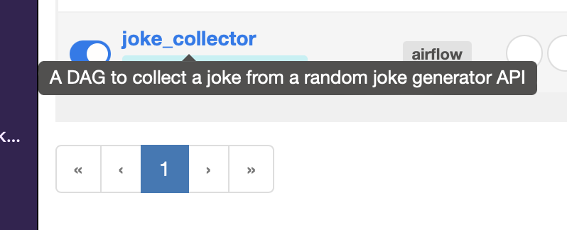

Airflow
Contents
Airflow#
building end-to-end data science solutions means developing data collection, feature engineering, model building and model serving processes. It’s a lot of stuff to stay on top of, right? To keep myself sane, I use Airflow to automate tasks with simple, reusable pieces of code for frequently repeated elements of projects, for example:
Web scraping
ETL
Database management
Feature building and data validation
What’s Airflow, and why’s it so good?#
Airflow is a Python based open source orchestration tool developed in-house by Airbnb in 2014 to help their internal workflows.
What makes it my go to? In short, it’s free, in pure Python, and it has a logical structure as well as a slick UI for management, logging and debugging. This means that with a bit of learning, it becomes the easiest way to take your scripts that do the stuff above and put it on a regular schedule.
In my opinion, the best part about Airflow is its elegant design of its DAGs, Tasks and Operators, making it approachable for anyone familiar with Python. It makes any kind of workflow possible.
DAGs, Tasks and Operators#
DAGs —short for directed acyclic graphs. This is a collection of Tasks that are ordered to reflect the functionality, requirements and dependencies of the workflow. Think of DAGs as your jobs or processes to run, such as scraping a website.
Tasks — these are the smaller pieces of functionality that make up DAGs. For example, a DAG could scrape a website once a day, and one of the tasks could check that the website still exists. Then you can define the DAG so that e.g. emails you (one task) if it no longer exists, or scrapes the site it does (a different task).
Operators — various Airflow built-in Python classes that can be executed by a task, e.g. PythonOperator for python scripts and BashOperator for bash scripts
Workers — Execute the assigned tasks
Scheduler — Responsible for adding the necessary tasks to the queue
Web server — HTTP Server provides access to DAG/task status information
Database — Contains information about the status of tasks, DAGs, Variables, connections, etc.
It’s a lot to get into without a concrete example — so keep some of that in mind and let’s get building!
Tutorial: building a joke collector with Airflow#
We’re going to build a simple Airflow DAG that hits the Chuck Norris joke API once a day and saves the result to a local csv. I’ll be closely following the quick-start Docker guide in the Airflow docs to get the environment up and running, then we’ll add in our joke scraping DAG.
First things first, clone my GitHub codebase to your machine. All you need is Docker, so make sure you have that installed too. This codebase contains two scripts to get your own Airflow instance up and running through Docker. First, open up a bash terminal (windows users should use git bash) in the project root’s directory and run:
bash airflow-init.sh
Which simply runs these bash commands:
mkdir ./data ./dags ./logs ./plugins
echo -e "AIRFLOW_UID=$(id -u)\nAIRFLOW_GID=0" > .env
docker-compose up airflow-init
The first and second line create some additional folders and an env file for the initialisation, and the last one performs the initialisation.
Next, run
bash airflow-up.sh
This builds and runs the web server, worker and Postgres database as separate docker containers, as per the docker-compose.yaml file in the repo. This is the official supplied Airflow Docker development file, it contains a lot of detail that is not super important for the purposes of this tutorial. We just want to get a development environment up and running.
You should now be able to access your Airflow instance on localhost:8080.
For this setup, the username and password are both airflow.
We’re all set up to add our DAG now. Create a new file called dag_joke_collector.py in the dags folder and add this snippet of code:
from datetime import timedelta
from airflow import DAG
from airflow.operators.python import PythonVirtualenvOperator
from airflow.utils.dates import days_ago
def callable_virtualenv_collect_joke():
import requests
import json
from csv import DictWriter
resp = requests.get('https://official-joke-api.appspot.com/random_joke')
if resp.status_code != 200:
return f'Failed with response code {resp.status_code}'
else:
joke_dict = json.loads(resp.text)
with open('jokes.csv', 'a+', newline='') as write_obj:
field_names = ['id','type','setup','punchline']
dict_writer = DictWriter(write_obj, fieldnames=field_names)
dict_writer.writerow(joke_dict)
default_args = {
'owner': 'airflow',
'depends_on_past': False,
'email': ['airflow@example.com'],
'email_on_failure': False,
'email_on_retry': False,
'retries': 1,
'retry_delay': timedelta(minutes=1),
}
with DAG(
'joke_collector',
default_args=default_args,
description='A DAG to collect a joke from a random joke generator API',
schedule_interval=timedelta(days=1),
start_date=days_ago(1),
tags=['automationwithairflow'],
) as dag:
joke_collector_task = PythonVirtualenvOperator(
task_id="joke_collector_task",
python_callable=callable_virtualenv_collect_joke,
requirements=["requests==2.25.1"],
system_site_packages=True,
)
joke_collector_task
We’re going to walk through this DAG step-by-step.
from datetime import timedelta
from airflow import DAG
from airflow.operators.python import PythonVirtualenvOperator
from airflow.utils.dates import days_ago
Starting from the top, from the airflow package (which will be already installed in our worker’s pip environment for us) we import DAG and the PythonVirtualenvOperator operator from airflow.operators.python . The DAG module is the main API for defining your DAG , as you’ll see later, when you use this, the web server will automatically pick up objects defined using this API and add it to your runnable DAGs in the UI.
We also import a couple of time-related helper functions. Note that we can use the core python package datetime to help us define our DAGs.
def callable_virtualenv_collect_joke():
import requests
import json
from csv import DictWriter
resp = requests.get('https://official-joke-api.appspot.com/random_joke')
if resp.status_code != 200:
return f'Failed with response code {resp.status_code}'
else:
joke_dict = json.loads(resp.text)
with open('jokes.csv', 'a+', newline='') as write_obj:
field_names = ['id','type','setup','punchline']
dict_writer = DictWriter(write_obj, fieldnames=field_names)
dict_writer.writerow(joke_dict)
Next, we define our callable Python function. This is the required structure when using the PythonVirtualenvOperator as part of a task. We import the packages that will be in the virtual env within the function itself. This lets us use packages like requests that aren’t installed by default into the Airflow worker container, but are passed into the PythonVirtualenvOperator to install at runtime.
Then from line 5 onwards we have the code that hits the joke API and writes it down locally to jokes.csv . Note that none of this will actually be run if we were to, say, run the script from the command line. This is all configuration as code — we are defining in code how we want the web server to implement our DAG.
default_args = {
'owner': 'airflow',
'depends_on_past': False,
'email': ['airflow@example.com'],
'email_on_failure': False,
'email_on_retry': False,
'retries': 1,
'retry_delay': timedelta(minutes=1),
}
The next section is a simply defining some default parameters for our DAG. Most are self-explanatory, note that the ‘owner’ is the airflow user we used to log into the UI.
with DAG(
'joke_collector',
default_args=default_args,
description='A DAG to collect a joke from a random joke generator API',
schedule_interval=timedelta(days=1),
start_date=days_ago(1),
tags=['automationwithairflow'],
) as dag:
joke_collector_task = PythonVirtualenvOperator(
task_id="joke_collector_task",
python_callable=callable_virtualenv_collect_joke,
requirements=["requests==2.25.1"],
system_site_packages=True,
)
joke_collector_task
We finally have the definition of the DAG. Using the with structure as you would when opening a file, we define a DAG with the name joke_collector, the default arguments we defined above, a quick description, the schedule interval, start date and tags.
With a schedule interval of 1 days and a start date of 1 days_ago which, by Airflow’s scheduling and triggers definition, will run automatically once upon initialisation, then once a day at midnight there on. If we defined the start date as 10 days ago, we would actually see it run 10 times upon initialisation, then once a day thereafter. Bit odd, right? This is how Airflow backfills based on the start date. It’s a bit of a gotcha at first, but for more complex, time related tasks it makes a lot of sense. For example, you might hit an API or a database based on a sliding time window to extract data in batches, and in order to perform a re-run you may define the start date as several months ago, then run the DAG with the date as a parameter, for each day leading up to today.
Let’s look at the joke_collector_task definition now. Remember how DAGs are made of Tasks, which use Operators to define what the task is to do at runtime. So this task will simply create a PythonVirtualenvOperator and run the code in the callable_virtualenv_collect_joke function. We pass in the requirements (just the requests package for this example) too. Finally, since we just want to run that task, we need to add the joke_collector_task at the end.
Refresh your UI and you should now see the your joke_collector and a second DAG!

DAGs start ‘paused’ by default, you’ll need to unpause it by clicking the far left button.
This should kick off that aforementioned initial one time run. Wait a little bit — it doesn’t run as quickly as it would in a py script or notebook.

Click on the joke_collector DAG to view more details about the run.

If all has gone well, you’ll see small dark green box indicating a successful run. You can hover over the task to view more details:

I like to use this to see the logs produced by the Airflow worker when running the task. Any print/logging statements you add in python will be seen here, too.
Fully refreshing your instance#
Run the following to fully refresh your docker containers and Airflow related data
bash docker-full-refresh.sh
TaskFlow#
If you write most of your DAGs using plain Python code rather than Operators, then the TaskFlow API will make it much easier to author clean DAGs without extra boilerplate, all using the @task decorator.
TaskFlow takes care of moving inputs and outputs between your Tasks using XComs for you, as well as automatically calculating dependencies - when you call a TaskFlow function in your DAG file, rather than executing it, you will get an object representing the XCom for the result (an XComArg), that you can then use as inputs to downstream tasks or operators.
XComs (short for “cross-communications”) are a mechanism that let Tasks talk to each other, as by default Tasks are entirely isolated and may be running on entirely different machines. An XCom is identified by a key (essentially its name), as well as the task_id and dag_id it came from. They can have any (serializable) value, but they are only designed for small amounts of data; do not use them to pass around large values, like dataframes. XComs are explicitly “pushed” and “pulled” to/from their storage using the xcom_push and xcom_pull methods on Task Instances. Many operators will auto-push their results into an XCom key called return_value if the do_xcom_push argument is set to True (as it is by default), and @task functions do this as well.
So the new TaskFlow Api wil under the hood execute xcom interchanges between pish and pulls but now it is hidden and easier to read.